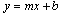
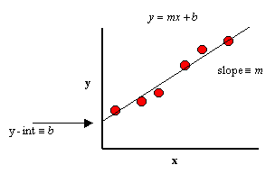
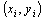
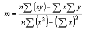
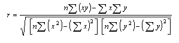

Physics Lab Tutorials
Linear Regression Tutorial
(See how to incorporate the linear regression methods and data found here
into a Microsoft Excel spreadsheet.
Also take a look at how we analyzed actual
experimental data
using linear regression techniques.)
If the relationship between two sets of data (x and y)
is linear,
when the data is plotted (y versus x) the result is a
straight line.
This relationship is known as having a linear correlation
and follows the equation
of a straight line 
. Below is an example of a sample data set and the
plot of a "best-fit" straight line through the data.


If we expect a set of data to have a linear correlation,
it is not necessary for us to plot the data in order to
determine the constants m (slope) and
b (y-intercept) of
the equation .
Instead, we can apply a statistical
treatment known as linear regression to the data and
determine these constants.
Given a set of data

with n data points, the slope and
y-intercept can be determined using the following:


(Note that the limits of the summation, which are i to n,
and the summation indices on x and y have been omitted.)
It is also possible to determine the correlation coefficient, r,
which gives us a measure of the reliability of the linear relationship
between the x and y values. A value of r = 1
indicates an exact linear relationship between x and y.
Values of r close to 1 indicate excellent linear reliability.
If the correlation coefficient is relatively far away from 1,
the predictions based on the linear relationship,
, will be less reliable.
Given a set of data with
n data points, the correlation coefficient, r,
can be determined by

(See how to incorporate the linear regression methods and data found here
into a Microsoft Excel spreadsheet.
Also take a look at how we analyzed actual
experimental data
using linear regression techniques.)
Physics Lab Tutorials
If you have a question or comment, send an e-mail to Lab Coordinator:
Jerry Hester
|
|
|
|
|
|

Copyright © 2006. Clemson University.
All Rights Reserved.
Photo's Courtesy Corel Draw.
Last Modified on 01/27/2006 14:25:18.
|
|